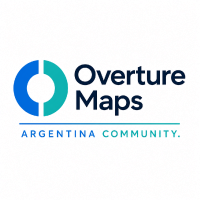
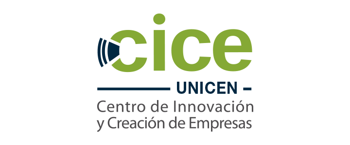

Datos abiertos
Overture Maps y el ecosistema de fuentes geoespaciales abiertas para proyectos reales.
Comunidad, datos abiertos y territorio
Un encuentro abierto para estudiantes, investigadores, profesionales, organismos publicos y empresas interesados en datos geoespaciales abiertos, colaboracion e innovacion aplicada.
Una tarde para conectar academia, comunidad e industria en Tandil.
Que vamos a encontrar
Overture Maps y el ecosistema de fuentes geoespaciales abiertas para proyectos reales.
Experiencias academicas y empresariales aplicadas a investigacion, productos y decisiones.
Una mirada institucional con referentes de la region y articulacion entre actores.
Espacio para conectar personas, ideas y futuras colaboraciones alrededor de la comunidad.
Organizan y acompanan

Overture Maps Argentina Community
CICE